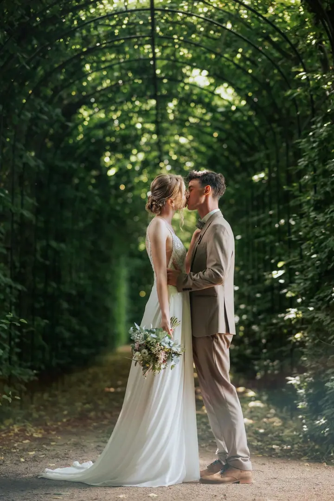
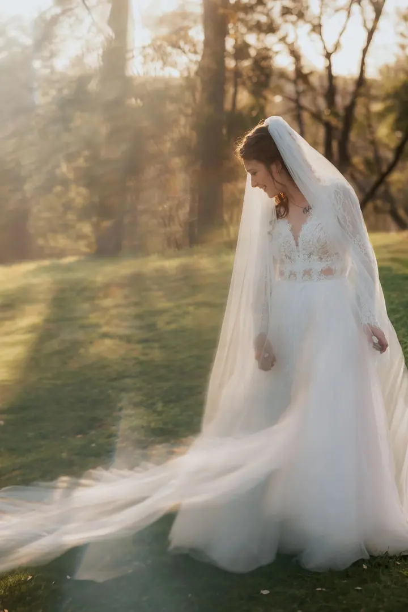
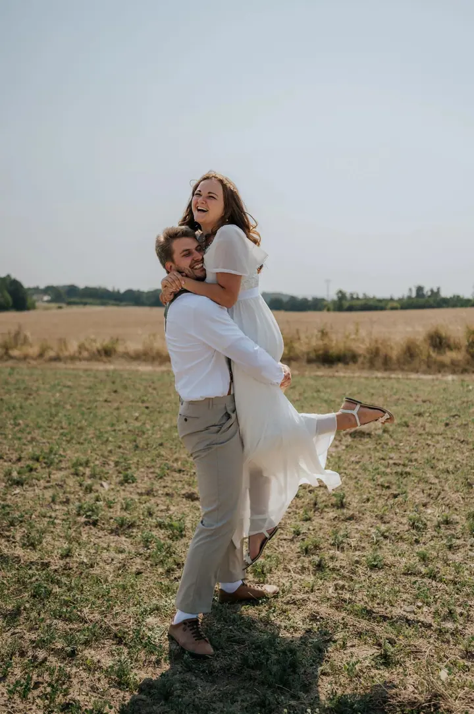
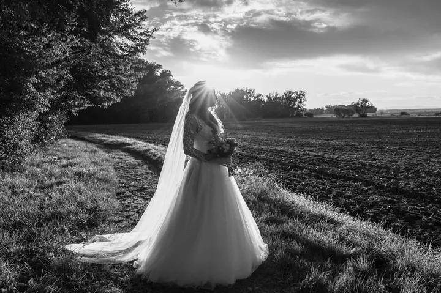

jedna
Svatební focení
Fotím hlavně to, co se opravdu děje, a do dne zbytečně nezasahuji. Když nevíte kudy kam, poradím vám a nasměruji vás. Balíčky začínají obřadem a končí celodenním focením od příprav po večer.

Svatební a rodinná fotografka · Frýdek-Místek, Havířov, Ostrava

Jmenuji se Markéta Oubrechtová a fotím svatby, rodiny a těhotenství ve Frýdku-Místku, Havířově a okolí. Nejradši mám přirozené světlo a opravdové emoce. Mám ateliér v Dolních Tošanovicích, ale ráda vyrazím i ven nebo za vámi domů.
Více o mně
Co fotím
jedna
Fotím hlavně to, co se opravdu děje, a do dne zbytečně nezasahuji. Když nevíte kudy kam, poradím vám a nasměruji vás. Balíčky začínají obřadem a končí celodenním focením od příprav po večer.
Nikam nespěcháme. Děti se můžou rozkoukat, běhat a hrát si. Fotím v ateliéru, venku nebo u vás doma.
Klidné focení v pomalejším tempu, nejlépe mezi 32. a 34. týdnem. Po narození miminka na něj můžeme navázat dalším focením.
V ateliéru Lumin v Dolních Tošanovicích fotím jednoduché portréty v klidném prostředí. Každý rok tu chystám i vánoční focení se dvěma scénami.

Když je potřeba, pomůžu. Když ne, jsem spíš v pozadí.

Za objektivem
Většina lidí mi na začátku řekne, že se nerada fotí. Že neví, co mají dělat, a že jejich děti nikdy nevydrží v klidu. Já jim na to většinou odpovídám, že to vůbec nevadí.
Každé focení je jiné. Někdy je hodně v pohybu, jindy v pomalejším tempu, a někdy je to trochu chaos. Děti se rozkoukávají, dospělí si chvíli zvykají. A právě z těchhle chvil pak vznikají ty nejlepší fotky.
Na svatbách se držím spíš v pozadí a sleduji, co se děje. Když je potřeba, poradím, uklidním a nasměruji. Chci, aby focení bylo přirozenou součástí vašeho dne a nevytrhávalo vás z něj.
Markéta
Pošlete mi termín a pár slov o tom, co si představujete. Ozvu se vám a doporučím, které focení by se k vám hodilo.
Vybereme balíček, místo a čas. U svatby je samozřejmostí smlouva a u balíčku Gold i předsvatební schůzka.
Fotím to, co se mezi vámi děje přirozeně. Nemusíte pózovat ani říkat „sýr“, a když je potřeba, ráda vám poradím.
Pošlu vám náhledovou galerii, ze které si vyberete fotky k úpravě. Hotové fotografie pak dostanete v online galerii v plné kvalitě.
Portfolio
Otázky
To mi na začátku říká většina lidí a vůbec to nevadí. Na focení máme dost času, nikam nespěcháme a z těch nejobyčejnějších chvil často vznikají nejhezčí fotky.
V mém ateliéru v Dolních Tošanovicích, venku na pár oblíbených místech nebo u vás doma. Ateliér je dobře dostupný z Frýdku-Místku, Ostravy, Havířova, Třince i Českého Těšína.
Balíček Mini (obřad) stojí 6 000 Kč, Silver na zhruba 5 hodin 12 000 Kč a celodenní Gold 17 000 Kč. Gold zahrnuje i předsvatební focení zdarma a 20 tištěných fotografií.
Ideálně mezi 32. a 34. týdnem těhotenství. Focení můžeme spojit s rodinným focením nebo na něj po narození miminka navázat.
Neupravené snímky neposkytuji. V ceně je vždy můj čas, pečlivý výběr a úprava fotografií. Další fotky nad rámec balíčku si můžete dokoupit.